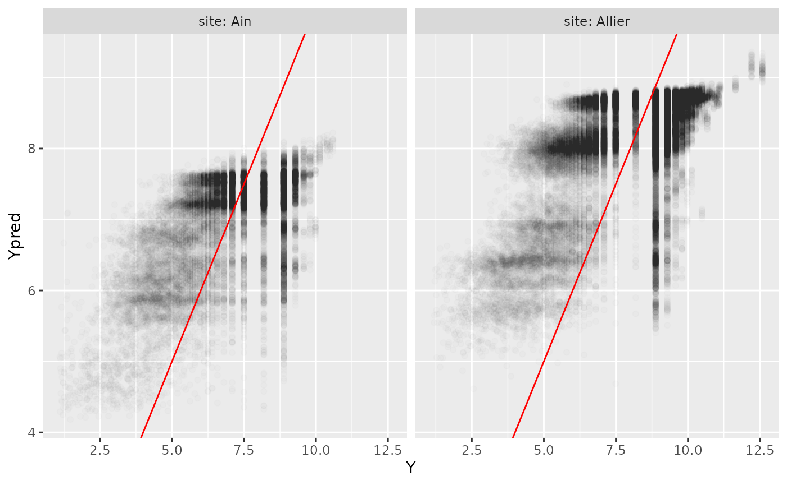

woody_Ain_Allier.Rmd
knitr::opts_chunk$set(warning=FALSE,message=FALSE)
library(woody)
library(tidyverse)Prepare data describing the two stations:
tib_sites=tibble::tibble(site=c("Ain","Allier"),
q1.5=c(840,460),
station=c("V2942010","K3400810")) %>%
mutate(path=paste0("../data-raw/wood_data_",site))
tib_sites## # A tibble: 2 × 4
## site q1.5 station path
## <chr> <dbl> <chr> <chr>
## 1 Ain 840 V2942010 ../data-raw/wood_data_Ain
## 2 Allier 460 K3400810 ../data-raw/wood_data_AllierFirst step: import wood data , indicating path to files and site name:
result_file="../data-raw/results/tib_W.RDS"
if(!file.exists(result_file)){
tib_W=tib_sites %>%
group_by(vars=site,q1.5,station,path) %>%
mutate(Wdata=purrr::map2(.x=path,.y=site,~import_Wdata(path=.x,site=.y)))
saveRDS(tib_W,result_file)
}
tib_W=readRDS(result_file)tib_W looks like this:
## # A tibble: 2 × 6
## # Groups: vars, q1.5, station, path [2]
## site q1.5 station path vars Wdata
## <chr> <dbl> <chr> <chr> <chr> <list>
## 1 Ain 840 V2942010 ../data-raw/wood_data_Ain Ain <tibble [23,788 × 5…
## 2 Allier 460 K3400810 ../data-raw/wood_data_Allier Allier <tibble [63,072 × 5…and inside tib_W, the first lines of Wdata (for both sites) look like this (for both sites):
## # A tibble: 6 × 5
## site event sitevent Time Date
## <chr> <chr> <chr> <dttm> <date>
## 1 Ain event_1 Ain_event_1 2007-11-22 14:12:13 2007-11-22
## 2 Ain event_1 Ain_event_1 2007-11-22 14:14:25 2007-11-22
## 3 Ain event_1 Ain_event_1 2007-11-22 14:14:59 2007-11-22
## 4 Ain event_1 Ain_event_1 2007-11-22 14:20:56 2007-11-22
## 5 Ain event_1 Ain_event_1 2007-11-22 14:57:16 2007-11-22
## 6 Ain event_1 Ain_event_1 2007-11-22 14:57:49 2007-11-22Collect qtvar data from banquehydro, for the period covered by Wdata, and back in time so as to be able to calculate T_Q:
result_file="../data-raw/results/tib_WQ.RDS"
if(!file.exists(result_file)){
tib_WQ=tib_W %>%
mutate(Qdata=purrr::map(.x=Wdata,.y=station,~get_Qdata(Wdata=.x,station=.y)))
saveRDS(tib_WQ,result_file)
}
tib_WQ=readRDS(result_file)tib_WQ looks like this:
## # A tibble: 2 × 7
## # Groups: vars, q1.5, station, path [2]
## site q1.5 station path vars Wdata Qdata
## <chr> <dbl> <chr> <chr> <chr> <list> <list>
## 1 Ain 840 V2942010 ../data-raw/wood_data_Ain Ain <tibble [… <tibble …
## 2 Allier 460 K3400810 ../data-raw/wood_data_Allier Allier <tibble [… <tibble …and inside tib_WQ, the first lines of Qdata (for both sites) look like this:
## # A tibble: 6 × 3
## station Time Q
## <chr> <dttm> <dbl>
## 1 V2942010 2007-11-22 13:52:00 177
## 2 V2942010 2006-11-22 13:52:00 295
## 3 V2942010 2006-11-22 15:00:00 299
## 4 V2942010 2006-11-22 15:48:00 295
## 5 V2942010 2006-11-22 17:30:00 276
## 6 V2942010 2006-11-22 19:00:00 255
result_file="../data-raw/results/tib_WQc.RDS"
if(!file.exists(result_file)){
tib_WQc=tib_WQ %>%
mutate(Qdata=purrr::map2(.x=Qdata,.y=q1.5,~complete_Qdata(qtvar=.x, qnorm=.y)))
saveRDS(tib_WQc,result_file)
}
tib_WQc=readRDS(result_file)tib_WQc looks like tib_WQ, except now Qdata inside has been completed with new variables:
head(tib_WQc$Qdata[[1]])## # A tibble: 6 × 7
## site station Time Q T_Q S rT_Q
## <chr> <chr> <dttm> <dbl> <dbl> <dbl> <dbl>
## 1 site V2942010 2002-11-22 13:52:00 0.463 NA NA NA
## 2 site V2942010 2002-11-22 13:58:00 0.465 NA 0.00198 NA
## 3 site V2942010 2002-11-22 14:50:00 0.480 NA 0.00137 NA
## 4 site V2942010 2002-11-22 18:13:00 0.499 NA 0.000469 NA
## 5 site V2942010 2002-11-22 20:27:00 0.531 NA 0.00120 NA
## 6 site V2942010 2002-11-22 21:49:00 0.539 NA 0.000508 NA
result_file="../data-raw/results/tib_WcQc.RDS"
if(!file.exists(result_file)){
tib_WcQc=tib_WQc %>%
mutate(Wdata=purrr::map2(.x=Wdata,.y=Qdata,~complete_Wdata_with_Qdata(Wdata=.x,Qdata=.y)))
saveRDS(tib_WcQc,result_file)
}
tib_WcQc=readRDS(result_file)Inside tib_WcQc, Wdata has been updated into:
## # A tibble: 6 × 9
## site event sitevent Time Date Q T_Q S rT_Q
## <chr> <chr> <chr> <dttm> <date> <dbl> <dbl> <dbl> <dbl>
## 1 Ain event… Ain_eve… 2007-11-22 14:12:13 2007-11-22 0.219 2.26 0.00201 1.10
## 2 Ain event… Ain_eve… 2007-11-22 14:14:25 2007-11-22 0.219 2.94 0.00197 1.28
## 3 Ain event… Ain_eve… 2007-11-22 14:14:59 2007-11-22 0.220 3.12 0.00196 1.33
## 4 Ain event… Ain_eve… 2007-11-22 14:20:56 2007-11-22 0.221 4.97 0.00186 1.83
## 5 Ain event… Ain_eve… 2007-11-22 14:57:16 2007-11-22 0.230 9.81 0.00115 3.13
## 6 Ain event… Ain_eve… 2007-11-22 14:57:49 2007-11-22 0.230 9.82 0.00113 3.13We then calculate tib_Wwt, updating Wdata so that 1 row= 1 waiting time between two wood occurrences.
result_file="../data-raw/tib_Wwt.RDS"
if(!file.exists(result_file)){
tib_Wwt=tib_WcQc %>%
mutate(Wdata=purrr::map(.x=Wdata,~Wdata_as_waiting_times(.x)))
saveRDS(tib_Wwt,result_file)
}
tib_Wwt=readRDS(result_file)Inside tib_Wwt, Wdata now looks like this (for both sites):
## # A tibble: 6 × 13
## site event sitevent Time Date Q T_Q S rT_Q
## <chr> <chr> <chr> <dttm> <date> <dbl> <dbl> <dbl> <dbl>
## 1 Ain event… Ain_eve… 2007-11-22 14:14:25 2007-11-22 0.219 2.94 0.00197 1.28
## 2 Ain event… Ain_eve… 2007-11-22 14:14:59 2007-11-22 0.220 3.12 0.00196 1.33
## 3 Ain event… Ain_eve… 2007-11-22 14:20:56 2007-11-22 0.221 4.97 0.00186 1.83
## 4 Ain event… Ain_eve… 2007-11-22 14:57:49 2007-11-22 0.230 9.82 0.00113 3.13
## 5 Ain event… Ain_eve… 2007-11-22 14:58:13 2007-11-22 0.230 9.82 0.00113 3.13
## 6 Ain event… Ain_eve… 2007-11-22 14:58:49 2007-11-22 0.230 9.82 0.00111 3.13
## # … with 4 more variables: TimeLagged <dttm>, W <dbl>, npieces <int>, Y <dbl>
file_result="../data-raw/results/Wdata_pred.RDS"
if(!file.exists(file_result)){
Wdata_pred=predict_rf(newdata=Wwt,
obj_rf=myrf)
saveRDS(Wdata_pred,file_result)
}
Wdata_pred=readRDS(file_result)The first lines of Wdata_pred look like this:
## # A tibble: 6 × 15
## site event sitevent Time Date Q T_Q S rT_Q
## <chr> <chr> <chr> <dttm> <date> <dbl> <dbl> <dbl> <dbl>
## 1 Ain event… Ain_eve… 2007-11-22 14:14:25 2007-11-22 0.219 2.94 0.00197 1.28
## 2 Ain event… Ain_eve… 2007-11-22 14:14:59 2007-11-22 0.220 3.12 0.00196 1.33
## 3 Ain event… Ain_eve… 2007-11-22 14:20:56 2007-11-22 0.221 4.97 0.00186 1.83
## 4 Ain event… Ain_eve… 2007-11-22 14:57:49 2007-11-22 0.230 9.82 0.00113 3.13
## 5 Ain event… Ain_eve… 2007-11-22 14:58:13 2007-11-22 0.230 9.82 0.00113 3.13
## 6 Ain event… Ain_eve… 2007-11-22 14:58:49 2007-11-22 0.230 9.82 0.00111 3.13
## # … with 6 more variables: TimeLagged <dttm>, W <dbl>, npieces <int>, Y <dbl>,
## # Ypred <dbl>, Npred <dbl>Now let’s assess the model’s predictive performance
For both sites:
R2=Wdata_pred %>%
calc_rf_R2()
R2## # A tibble: 1 × 3
## SCR SCT R2
## <dbl> <dbl> <dbl>
## 1 174136. 295393. 0.410
R2_bysite=Wdata_pred %>%
group_by(site) %>%
tidyr::nest() %>%
mutate(R2=purrr::map(data,calc_rf_R2)) %>%
select(site,R2) %>%
unnest(cols=c(R2))
R2_bysite## # A tibble: 2 × 4
## # Groups: site [2]
## site SCR SCT R2
## <chr> <dbl> <dbl> <dbl>
## 1 Ain 49811. 74919. 0.335
## 2 Allier 124325. 193864. 0.359
p=ggplot(Wdata_pred,aes(x=Y,y=Ypred))+
geom_point(alpha=0.01)+
geom_abline(intercept=0,slope=1, col="red")+
facet_grid(cols=vars(site),
labeller = labeller(.rows = label_both,
.cols = label_both))
plot(p)